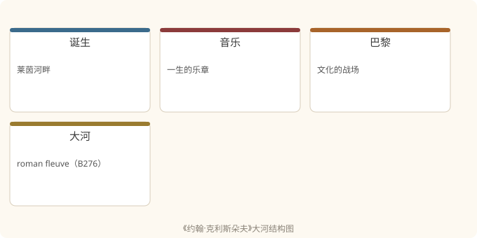

约翰·克利斯朵夫
一、基本信息
| 作者 | 罗曼·罗兰 |
|---|---|
| 成书/出版 | 1904—1912年十卷（作者页B276口径：Jean-Christophe 10卷 (1904–12)——'a prime example of the roman fleuve'） Romain Rolland — Encyclopaedia Britannica（百科全书） |
| 国别/地区 | 法国 |
| 时代 | 现当代 · 20世纪 |
| 体裁 | 大河小说（十卷） |
| 语言 | 法语 |

《约翰·克利斯朵夫》大河结构图（主题·结构图）
二、创作背景
Britannica（B276）：'Rolland's masterpiece, Jean-Christophe... is a prime example of the roman fleuve (novel cycle) in France'；10卷刊于 Les Cahiers de la Quinzaine（B276）。
题材（通说待核）：德国血统的音乐家约翰·克利斯朵夫·克拉夫特的一生——以贝多芬为原型（B276：Vie de Beethoven 语境）。
三、内容脉络
音乐家的一生：德国—巴黎—瑞士—意大利（通说待核）。
'音乐'与'生活'的同构（通说待核）。
四、主要人物表
| 人物 | 身份 | 说明 |
|---|---|---|
| 约翰·克利斯朵夫·克拉夫特 | 音乐家 | 以贝多芬为原型（通说待核） |
| 奥里维 | 法国友人 | （通说待核） |
五、主题与艺术特点
- '大河小说'（B276：roman fleuve）。
- 英雄与音乐（B276：贝多芬传记语境）。
- 法德文化的桥（通说待核）。
六、影响与评论
- Britannica：'masterpiece'；'prime example of the roman fleuve'（B276）。
Romain Rolland — Encyclopaedia Britannica（百科全书） - Britannica：1915年诺奖（B276 作者级）。
Romain Rolland — Encyclopaedia Britannica（百科全书）
七、阅读建议
难点
- 十卷体量。
- 音乐结构章节。
- 《约翰·克利斯朵夫》（人民文学出版社傅雷译本四册，通说待核）。
- 法文原版（公有领域）。
傅雷译本为中文世界经典。
八、待核实
- 十卷分卷与四册（傅雷）对应核对。
- 克拉夫特人名核对。
- 傅雷译本（1930—40年代）信息待核。
本页主要来源
罗曼·罗兰的其他收录作品：约翰·克利斯朵夫